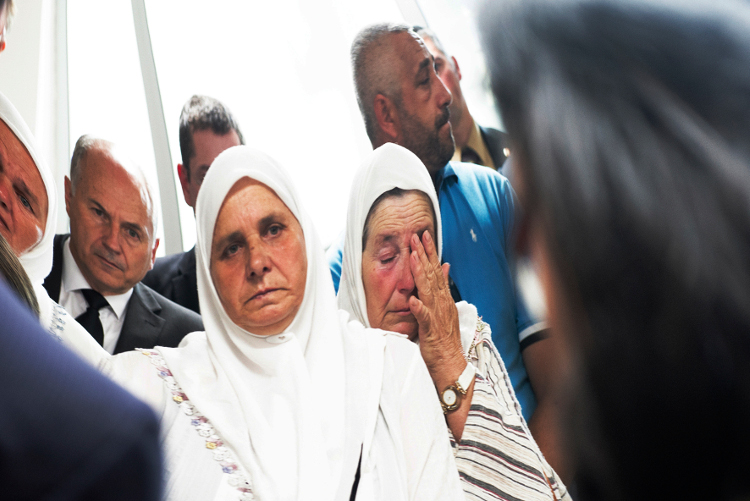

The war in the Balkans culminated in 1995 when Bosnian Serb forces overran the city of Srebrenica in Bosnia and Herzegovina and massacred 8,000 Muslim men and boys, the worst such atrocity to take place on European soil since World War II. In 2012, on a visit to the Potočari memorial site, Secretary-General Ban Ki-moon paid his respects to the victims of the genocide (left) and called on the world to draw lessons from the massacre and stop the bloodshed in Syria by implementing the principle of “Responsibility to Protect,” which holds States responsible for shielding their own populations from genocide and war crimes and requires the international community to step in if that obligation is not met.
UN Photo/Eskinder Debebe
